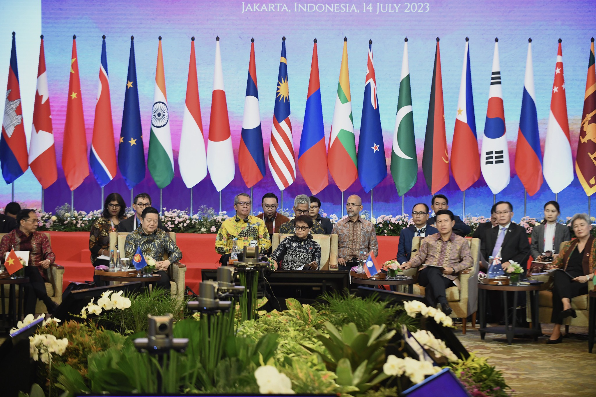
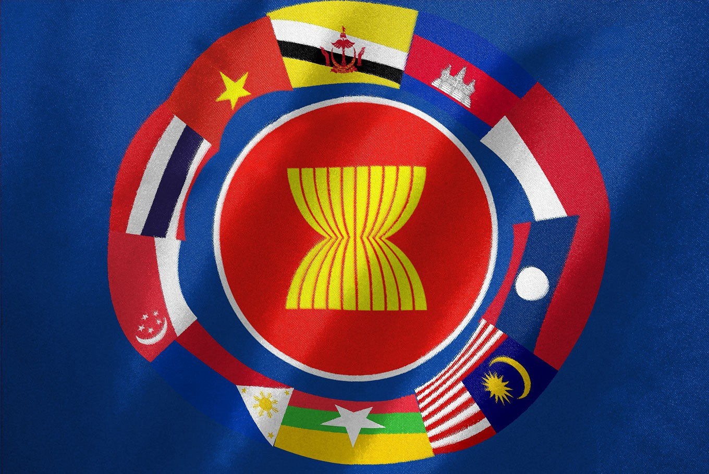
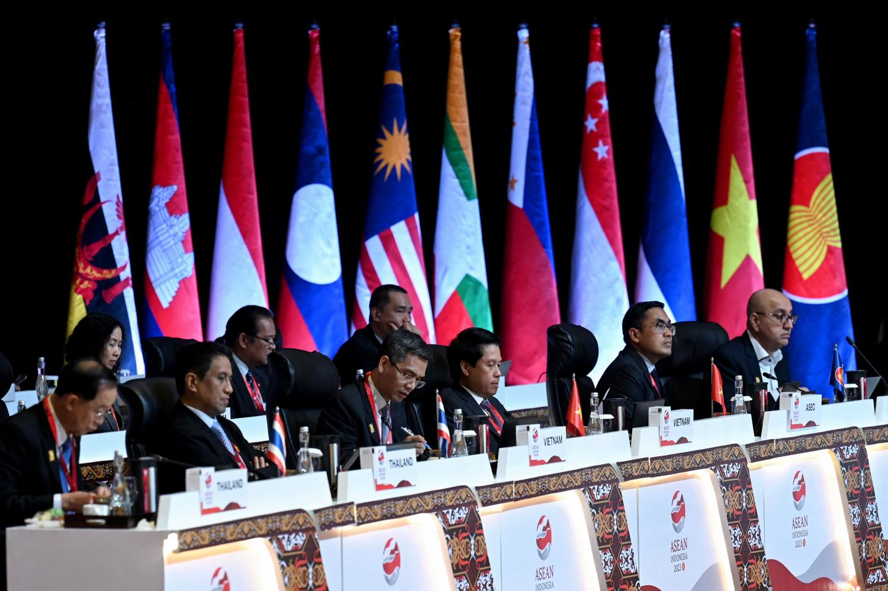
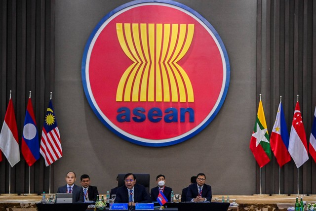

.png)


   
Kerjasama yang dilakukan oleh negara-negara dalam suatu kawasan atau wilayah tertentu untuk mencapai tujuan bersama yang mencakup berbagai bidang seperti politik, ekonomi, sosial, budaya, dan keamanan. Kerjasama ini berfokus pada kepentingan bersama negara-negara yang terlibat dan dapat dilakukan dalam bentuk perjanjian atau organisasi.
Ada beberapa Jenis - jenis kerjasama dalam kawasan Regional :
1. Kerjasama Ekonomi : Di bidang ekonomi ini mencakup perjanjian perdagangan, peningkatan investasi, dan pengembangan ekonomi antar negara regional.
2. Kerjasama Keamanan : Keamanan ini sangat penting karena ini dapat bertujuan untuk menjaga ke-stabilitas keamanan dan membantu dalam menangani masalah narkoba, terorisme, dan ancaman/konflik - konflik antar negara.
3. Kerjasama Sosial dan Budaya : Di bidang ini meliputi pertukaran budaya, pendidikan, pariwisata, dan perlindungan hak asasi manusia. Hal ini juga dapat meningkatkan kualitas masyarakat - masyarakat dan generasi yang akan datang
4. Kerjasama Lingkungan : Lingkungan akhir - akhir ini menjadi isu yang sangat penting seperti perlindungan lingkungan hidup, perubahan iklim, dan pengelolaan sumber daya bersama. Hal itu termasuk dalam Kerjasama Lingkungan sehingga hal ini sangat penting untuk negara - negara bekerja sama. Contoh konkretnya:
Forum Kerjasama Ekonomi regional : UK berpasitipasi dalam beberapa forum ekonomi regional seperti Asia-Pasific Ekonomic Coorperation (APEC) dan G20 dimana Indonesia juga berpasitipasi dan berperan aktif dalam kedua forum tersebut. Kedua negara tersebut mendukung insiatif untuk meningkatkan perdagangan dan investasi di kawasan.
Tujuan dari Kerjasama Regional ini ada banyak seperti : Meningkatkan stabilitas dan keamanan, Peningkatan ekonomi, Penyelesaian masalah bersama, dan Peningkatan Kesejahteraan Masyarakat.